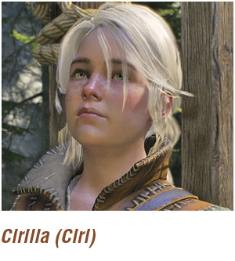
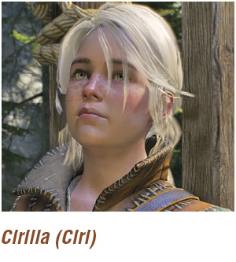

Main Quest: Kaer Morhen A Good Bath Spoiled
{kind=link}
|
Related Quests: Main Quest: Lilac and Gooseberries Characters: Yennefer, Vesemir, Cirilla Enemies: None |
Objectives:
|
{kind=link}
After your bath is interrupted by an inquisitive crustacean, you speak to the rather becoming Yennefer (strange that she’s with you at Kaer Morhen), and begin to search your bedchamber. You can:
 (Optional) Converse with Yennefer if you wish.
(Optional) Converse with Yennefer if you wish.
Bring up your Witcher Senses (hold the button) and learn the basics of this crucial and beneficial skill. Areas of interest within the environment stand out in a red hue. There are various items to inspect, such as Yennefer’s clothing and a goblet, but the item you’re interested in is the key on the book to the north, close to the bedroom exit.
{kind=link}
 
 {kind=link}
Simply move to your bedroom door and open it. Head down the stairs to a meeting with your mentor—Master Witcher Vesemir. Answer him how you wish, before joining your young adept Cirilla (or Ciri) down on the battlements. Answer her how you wish, before deciding on the following:
Running the Walls: This begins a maneuvering tutorial, and is recommended.
Skipping the Run: This ignores the tutorial.
The Witcher® is a trademark of CD PROJEKT S. A. The Witcher game © CD PROJEKT S. A. All rights reserved. The Witcher game is based on a novel by Andrzej Sapkowski. All other copyrights and trademarks are the property of their respective owners. Learn more at thewitcher.com.